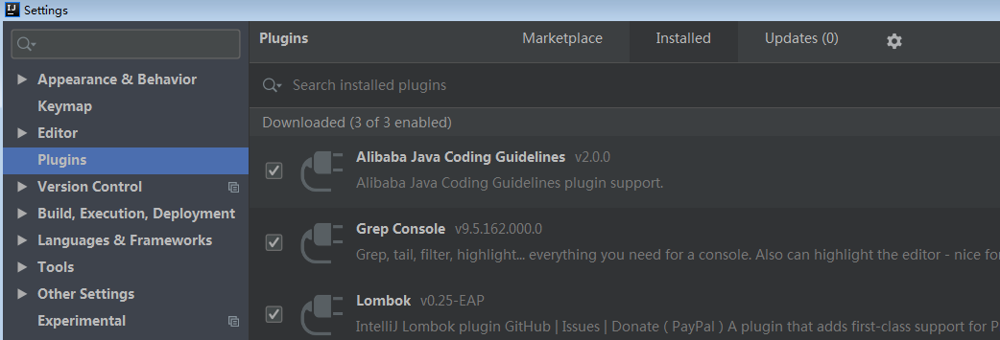
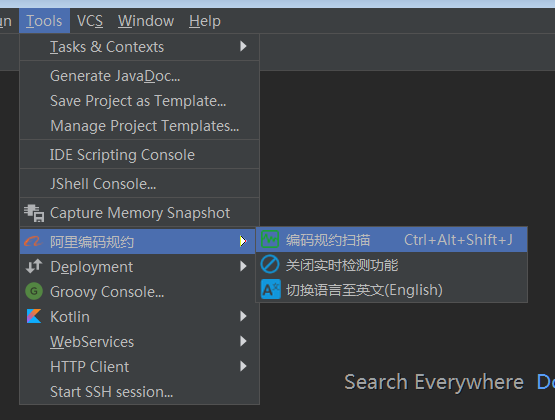
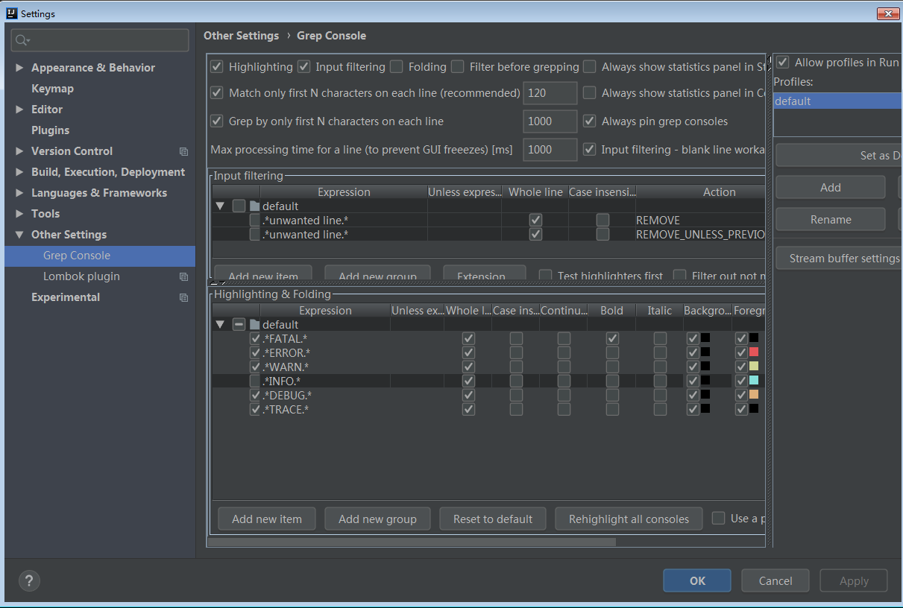
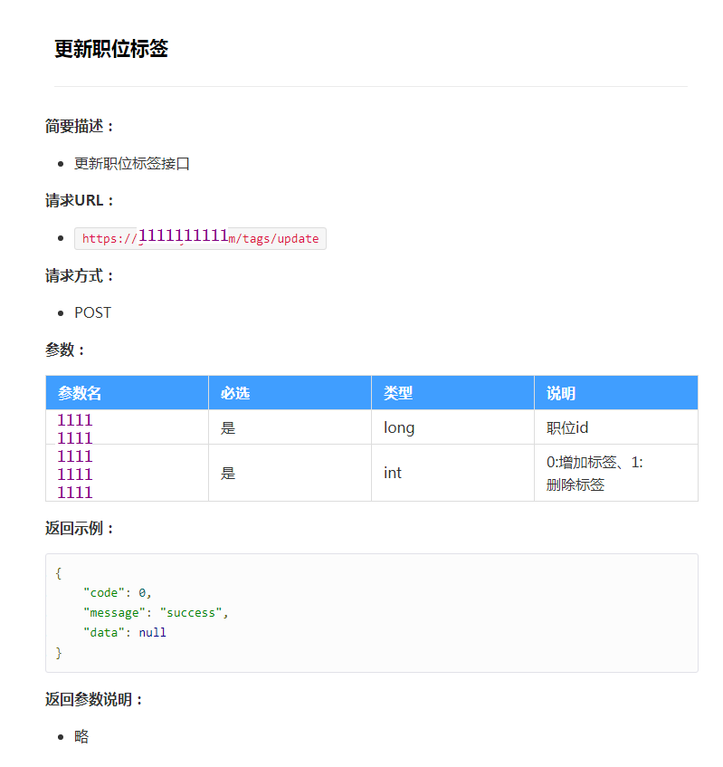
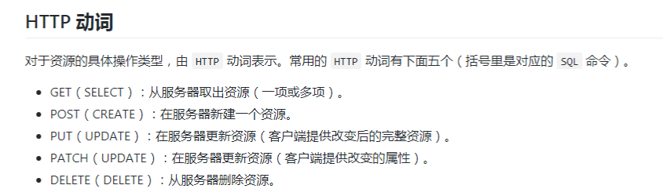
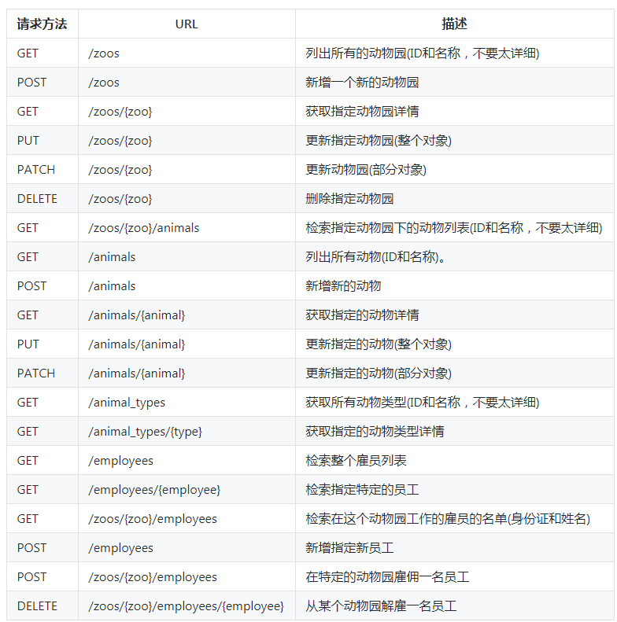
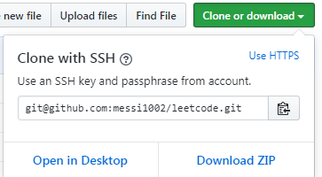
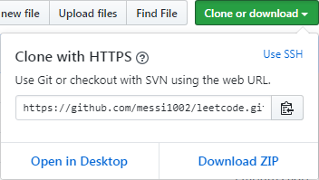

1.开发环境
①开发必备
- Java 版本：JDK8
- Web 服务器：Tomcat9（运行后端）、Nginx（前端请求转发和搭建图片服务器）
- 工程框架：Spring Boot 2.0
- 操作数据库：Spring Boot Jpa（优先） / Mybatis
- 其他：Lombok 插件、JSON（fastjson / jackson）
②数据库
- MySQL（主 db）
- Redis（处理缓存）
- MongoDB （特殊需求使用）
③编译器&构建工具&测试工具
- IDEA
- maven（优先） / gradle
- Postman
2.框架分层
①总览
- common（公共包）
- enums（枚举类）
- exception（全局异常处理）
- interceptor（拦截器）
- jpa（jpa 配置）
- log（AOP 方式的日志埋点）
- utils（工具类）
- controller（控制层）
- model（DAO 层）
- dto（数据传输对象）
- entity（数据库实体类）
- repository / mapper（数据库操作层）
- service（服务层)
- base（基础服务）
- impl（业务服务实现类）
- resources（资源目录）
- application.yml（切换配置文件）
- application-dev.yml（本地配置文件）
- application-pro.yml （服务器配置文件）
②common层
- ResultEnum 类：用于存放前端请求的响应 / 执行结果
- 注意枚举类定义格式 私有变量名不能定义为 name
③controller层
- 调用 service 层方法
- 提供对外暴露的接口
④model层
- ResultDTO 类：统一使用此类将数据封装好返回给前端
- 关于使用 DTO：从数据库中查出的是一个完整的对象，而大多数时候只会用到某些字段，这时候需要 DTO。
3.代码规范
①注释
- 类注释（配置模板）
1 | /** |
- 方法注释（配置模板）
1 | /** |
- 变量注释
1 | /** |
- 方法内注释
1 | // 文字 |
②注解
- 自动装配用 @Autowired 注解 其 byType 注入 注解在字段上
- @component：泛指组件 把普通 POJO 实例化到 spring 容器中
- @Service：用于标注业务层组件
- @RestController：用于标注控制层组件
- @Repository：用于标注数据访问组件 即 DAO 组件
- @RequestMapping(value = “/URI”)：标注控制层组件中的方法
- @GetMapping(value = “/URI”)：标注控制层组件中的方法
- @PostMapping(value = “/URI”)：标注控制层组件中的方法
- @RequestParam：用于标注控制层组件的方法的参数
- 参数名与前端传来的必须吻合 若是不吻合 需要加 value = “…” 使参数名一一对应
③配置文件
- application.yml：总控制文件 可随时切换为本地 / 服务器的配置文件 便于开发
1 | spring: |
- application-dev.yml
1 | server: |
- application-pro.yml
1 | server: |
④pom.xml（maven）
1 |
|
⑤其他
- 将私有常量值单独定义在类的开头 公有常量值定义在公有枚举类中
- 工具类一般不需要被注入或构造 只包含普通的类方法
- 所有需要注入的类，都应该放到 Service 目录下
- 除 db 对象外 尽量使用全参构造对象
- 尽量消除魔法值 可使用枚举类封装
- 遵循《阿里巴巴Java代码开发规范》进行开发
4.安装插件
- 安装插件：Settings —> Plugins —> Marketplace —> 查找所需插件 —> Install
- 查看安装的所有插件：

- 安装后需要重启 IDEA
①Lombok
以简单的注解形式来简化 Java 代码，提高开发人员的开发效率。
- @Getter：注解在类上 为类提供 get 方法
- @Setter：注解在类上 为类提供 set 方法
- @Data：注解在类上 为类提供读写属性 此外还提供了equals()、hashCode()、toString() 方法
- @AllArgsConstructor：注解在类上 为类提供一个全参的构造方法
- @NoArgsConstructor：注解在类上 为类提供一个无参的构造方法
- @Slf4j：注解在类上 为类提供一个属性名为 log 的 log4j 日志对象
- @Slf4j 相当于 private static final Logger log = LoggerFactory.getLogger(CategoryServiceImpl.class);
②Alibaba Java Coding Guidelines
阿里巴巴 Java 代码规约检测
- 使用插件：

③Grep Console
可以将不同级别的日志通过颜色区分，便于查看。
- 配置各级日志的颜色：

5.前后端交互
①交互流程
1.通过原型图确定产品功能（明确每个细节）
2.后端撰写 API 文档及建表
3.前后端按照 API 文档各自开发
4.测试
②API文档
- ShowDoc
- 举例：

③RESTful API
- 后端撰写请求 URL 时 必须遵守 RESTful API 设计规范

- 举例：

6.关于团队协作（git）
GitHub 客户端每次只能 commit 一个文件，不利于版本回滚和团队协作，所以尽量使用 git 命令行。
①git同步流程
- 一般开发完成、但还没有测试的文件都会被提交到暂存区
- 将暂存区的文件（测试好的）提交到本地仓库
- 通过 git push 提交修改到远程仓库
②git常用命令
- git add 文件名：将本地某个文件添加到暂存区
- git add *：将本地所有文件添加到暂存区
- git commit -m “本次提交说明（自定义）”：将暂存区文件提交到本地仓库
- git push -u origin master：使用本地 master 分支来更新远程 master 分支（远程仓库）
- git reset HEAD 文件名（将暂存区的内容还原为最后一次提交的内容）
- git checkout – 文件名（将工作区的内容还原为最后一次提交的内容）
- git tag -a name -m “comment”：新建标签并指定提交信息
- git tag -d name：删除标签
- git branch：查看当前所有分支
- git branch name：创建分支
- git checkout name：进入分支
- 通过两种方式克隆仓库：
- Clone with SSH：git clone git@github.com:messi1002/leetcode.git
- Clone with HTTPS：git clone https://github.com/messi1002/leetcode.git


③git高级操作
- git stash save “注释”：将工作区和暂存区的新内容暂时保存在栈中
- git stash list：显示缓存堆栈中的内容
- git stash pop：将缓存堆栈中的第一个 stash 内容恢复到工作区后删除
- git commit –amend：将缓存区的内容补充到上次 commit 并可以修改上次 commit 的描述（用来修复最近一次 commit）
- git rebase -i [startpoint] [endpoint]：每一个功能开发完成后 对多个 commit 进行合并处理（变基）
1 | [startpoint] 和 [endpoint] 指定了一个编辑区间，前开后闭。 |
7.入门博客汇总
- StringUtils用法+StringUtils详细介绍
- Java 枚举类Enum的用法总结
- Spring Boot 中 Redis 的使用
- 如何使用RedisTemplate访问Redis数据结构
- Spring Boot中使用Redis数据库
- Spring Boot中快速操作Mongodb
- Spring Boot 中 MongoDB 的使用
- Spring Boot Jpa 的使用
- 如何优雅的使用 Mybatis
- MyBatis中Like语句使用方式
- Java 开发工具–Lombok 介绍
- Spring Boot中Jackson应用详解
- JSON框架之阿里fastjson的介绍
- RESTful API 设计规范
- Git—版本控制工具
- Git教程
- 上传图片到七牛云（前端和后端）
附录
- 我的个人博客：messi1002.top
- 如有错误或疑惑之处 请联系 wjymessi@163.com